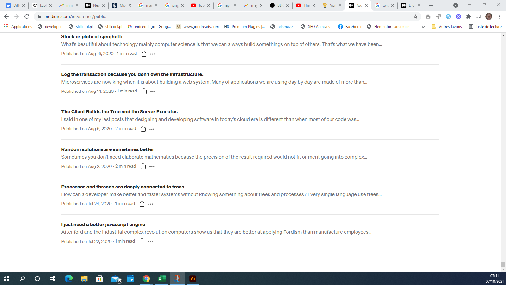
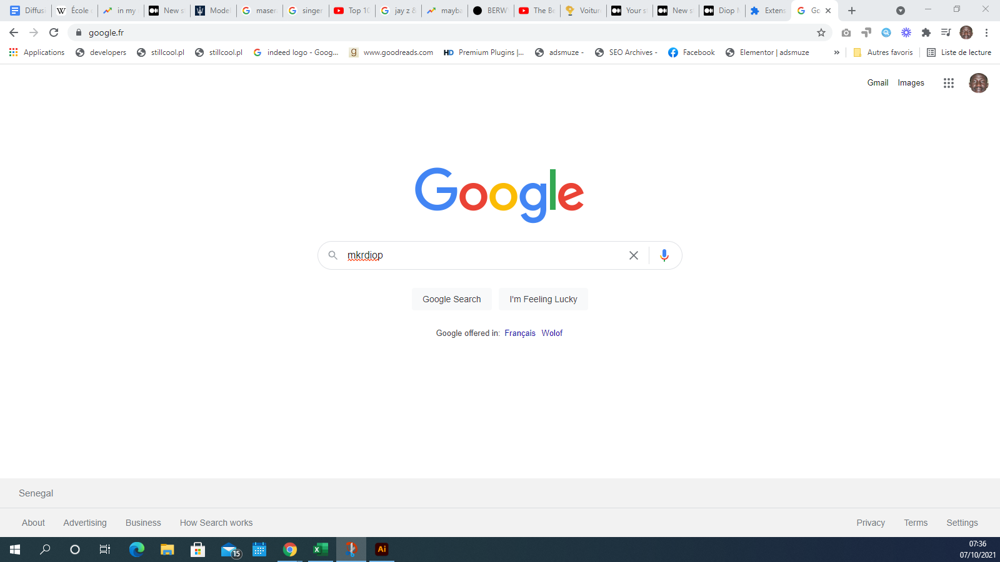
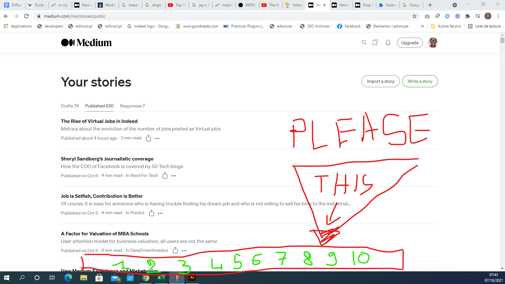
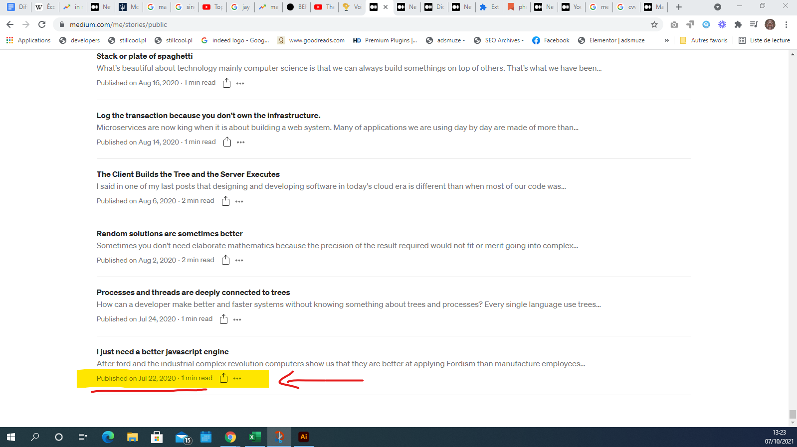

Is Medium Publication against writers?
A complaint about Pagination for Medium’s writers

The picture below is what you see when you are in front of the list of articles you have written for my case it is now about 600 articles of any given length and topic but articles that I care about and maybe you too. They all are articles like this one that you are reading, Sincerely written for bringing my contribution to this world by sharing ideas and insights about how I see the world and what I think that I have understood about this thing, a thing that could understand better than me but I believe that writing about it and sharing it could help someone understand it or something else. This is what drives me every time I write something that will be publicly accessible to everyone like you who could read and who gives me her attention and time while these two resources are becoming scarcer and scarcer.

from this picture above you could see that there isn't a pagination module meaning that a writer needs to scroll down to get to her past articles published and even for those in editing state. If you are reading this article you should know the effect of scrolling which is a few seconds of waiting time once you reach the bottom of the loaded content. During this time the client just waits for the data to be downloaded from the server in order to display it but this could be seen as giving you more technical details about how scrolling works what is not the topic of this article.
For every kind of platform, be it a website, an application, or software, that uses a screen to display information, Scrolling and pagination are means of surfing information and each one of these two mean of processing information have benefits and inconveniences that can impact both the platform owners and users, readers like you in this precise case. F
For a Reader like you, it may be simpler to just scroll a page with your mouse than to manipulate your cursor for poisoning it up to this pagination menu available for parkouring information and the benefit of this method for the website or platform owner is a reduction of expense thanks to the low amount of data to send to your browser and for the SEO stealer of attention to put few seconds into the loading phase increasing, by the way, the time you will spend on the page what will be converted into a signal that could tell the search engines that you care about this webpage you are waiting to load because their algorithms take into consideration the time you have spent on a given as signal of interest. I hope that you understand me and hope that Medium is not concerned by such kind of bad SEO Activity and attention-stealing but you could agree with me that since Google is Google it never implemented a scrolling feature but always stuck to the pagination solution what is the best decision for US readers and searchers.

With pagination, we have more choice because rather than loading the content according to the ranking defined by google you could just go to page 5. To say that you have 10 options of 10 different results to consume and I hope that you can see that this is not the same as stacking all the results and providing you only a scrolling functionality. How would our life be if google was working like that? I mean with only scrolling for processing search results. For my part, I think it would be difficult to live with and even more if google fails to be able to continue to provide free accessible search results.
For the case of Medium, the listing of articles of writers actually works only with the scrolling option. We need to scroll down to get to an article that we have published a long time ago and this could be time-consuming if this article that we are looking for was published a year ago. That is what very often happens to me because when I write I often reference with a link something that I have written year week month or day and even hour before for proving that I am coherent with what I am trying to highlight and for giving you, the reader, more information about what I want you to grasp.
If there was a pagination option we could just guess the page from with we could expect to see this article and if we don't get it into this page we are clever enough to take this failure as a new signal to be more precise about our next guess. It is like how we look for a name in an alphabetically ordered list and the understanding of this natural way of finding sorted things led to a search algorithm called binary search. A search Algorithm that software engineers like you and me know and maybe writers also but I am almost sure that you know nothing about this strange algorithm about which I have written in October of last year, almost a year ago. I found it and pointed to it because It naturally came to my mind while I was writing. To show you that I frequently experience the need of finding an article that I have written a long time ago and I am sure that many other writers have the same need.

and not pleased to experience this pain, I also discovered while writing about this article that I have only access to articles that I have published before July 2020 because when I scroll infinitely to get the articles it just stops there while I have way more articles back to this date.

If I have silenced this scrolling problem for so many time it is because of this advanced search options that Google provide to all users that I know how to use. Then I should thank Google for that.
When I was writing about this coming CVW update of Google search algorithm back in December 2020, I was really fearing to see the publication startup Medium punished by google when it will roll out its new search engine feature about User Experience. This CVW Update seems to be pending to be deployed or is actually in test with a subset of users to which I am not part. If you are tell me how it’s like. At that time that I was writing about this Google update, I believed that the writing experience that I was getting on Medium wasn’t compliant with my knowledge and interpretation of the technical details and implementation of Google CVW but this is not an Article about discussing technical things about search engines, SEO, rankings and content publishing but an article for complaining as a writer and speaking on behalf of each writer who uses Medium because if this platform for reading and writing becomes better it will for all of us. If this happens, I will not hesitate to write about how great the experience is like what I have done a week ago by writing this article when I was not thinking or planning to write this complaint that you are reading. I just have complained a bit about the paywall but about which I have already said that it didn’t matter to me if I get no revenues from my writings because the words cost me nothing to write but I hope and wish that you will earn a lot of money by writing if you write because writing really matters more today and tomorrow than how much it used to matter yesterday.
I am advocating for you writer but I really believe that the words that you have written already did it for you and will continue to do it on your behalf as long as they could be read by a reader like me and you to say that I am not only a writer complaining but also a reader like you. Reading and Writing are the most important skills of the world if this was an article about religion and you were open to hear and read about this illiterate prophet I would be eager to tell you that he was illiterate because God wanted to show us how writing and reading are important and that’s what the angel first asked this illiterate to mean that getting the skill of reading is the first requirement of a human being who is willing to experience truth and be well guided, almost like an obligation. Forgive me for going into religious topics while I looked few words above to not willing to go into it.
The most important thing is that we have something in common and this thing is reading because you have been there so far. I hope that you also write and love writing, in such case this complaining is for you and we would live a better life if each one of us writes, speaks and shows up for this complaint to be solved and the first step toward this goal could be to share this article if you want and can.
Scarcity of resources can make us think that for getting these resources by sacrificing little the values we hold to and believe don't matter more because we cannot live without them while it is when we should more commit to holding them and believing in them more. I am not so knowledgeable in Medium Corporate culture but I think that empowering readers and writers is part of its value then I am really commanding Medium’s team to hold and believe to this value best it is the best moment now that resources are scarce for almost every one of us
A better design of medium’s editor articles listing with pagination not scroll only.
PS: 28,200,000 web pages are enough for data for a new search engine solution that will for sure compound the best of Google and the best of Medium for doing things that matter for people who care without expecting something from them we always get something in return. In my case writing this complaint as my contribution to the promotion of writers and as an advocating voice for making easier the experience and journey of writers, I earned already a better view and understanding of this tech-enabled project about search engine.